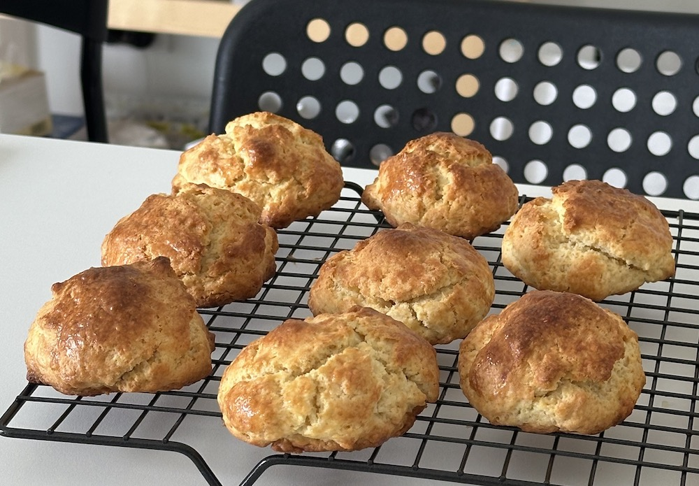

Scones

Description
This is my current favourite scone recipe. The scones are soft on the inside and flaky on the outside, with a right amount of buttery-sweet flavour. Makes 8 little scones.
Ingredients
- 71g unsalted butter
- 180g plain flour
- 20g almond meal
- 6g baking powder
- 45g caster sugar
- 1.5~2g pink salt
- 34g egg
- 16g egg wash
- 112g cream
- 1tsp vanilla extract
Steps
- Put all dry ingredients except butter in a food processor and pulse until well combined.
- Add pieces of cold butter into the food processor and pulse until the butter pieces become as small as a rice grain.
- Mix all wet ingredients in a bowl.
- Add the butter-flour mixture to the bowl and use a spatula to mix until no dry flour is left.
- Pat the dough into a disk shape, cling-wrap it and refrigerate.
- Preheat oven to 200 degrees celsius.
- Divide the dough into 8 balls, egg wash them and bake at 190 degrees celsius for 20 minutes or until golden.
Home